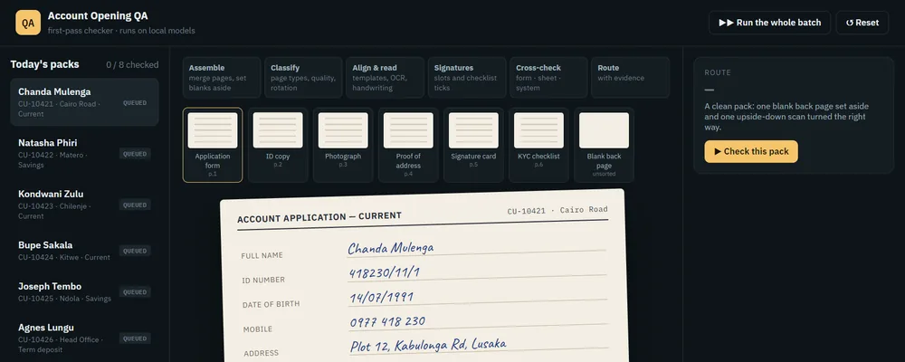
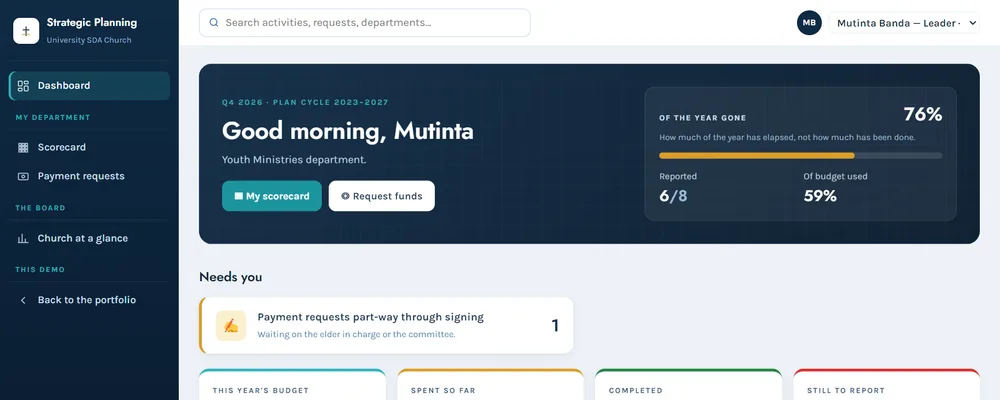
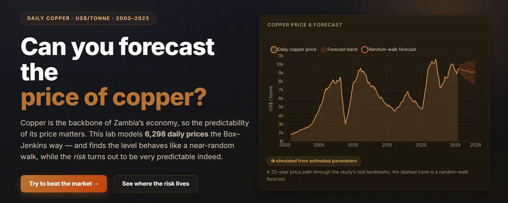

Account Opening QA Agent
An AI agent that checks scanned account-opening packs on locally run ML models — 96–100% document-check accuracy, and no client data leaves the bank.
View Details →Hi, I'm
Data Analyst · AB Bank Zambia
I turn complex datasets into decisions people can act on. I'm the bank's sole analyst — building the dashboards and automated pipelines behind its Executive and Board reporting — and the founding chair of its AI Committee. Based in Lusaka, Zambia.
Microsoft PL-300 (950 / 1000) · BSc Actuarial Science, UNZA · Building with agentic AI
An AI system at the bank, a platform in daily use, and research you can explore in the browser.

An AI agent that checks scanned account-opening packs on locally run ML models — 96–100% document-check accuracy, and no client data leaves the bank.
View Details →
Planning, quarterly scorecards and a four-stage payment approval chain for a 2,000+ member church and its 36 departments.
View Details →
AR(2) and GARCH(1,1) models on 25 years of daily copper prices — the level is a random walk, but the risk is predictable.
View Details →A few things I care about outside the spreadsheets and dashboards.
Watching the NBA and getting on the court for weekend pickup games. Same love of strategy and team flow as chess — just at a much faster tempo.
Casual blitz player on chess.com. The blend of pattern recognition and long-form thinking transfers neatly to the analytical work I do during the day — and it's a quiet way to unwind.
Always have a book on the go — mostly nonfiction on data, psychology, and dystopian futures. The kind that quietly changes how I think about life.
I have the music taste of a 50 year old man going through a midlife crisis — a mix of 70s/80s rock and 90s R&B. Headphones in is when the day's analysis actually moves. My team members say I'm most productive when they can hear Beyoncé blasting through my headphones.
Strategy and story-driven games. The same brain that loves chess problems and forecasting curves enjoys puzzles wrapped in pixels.